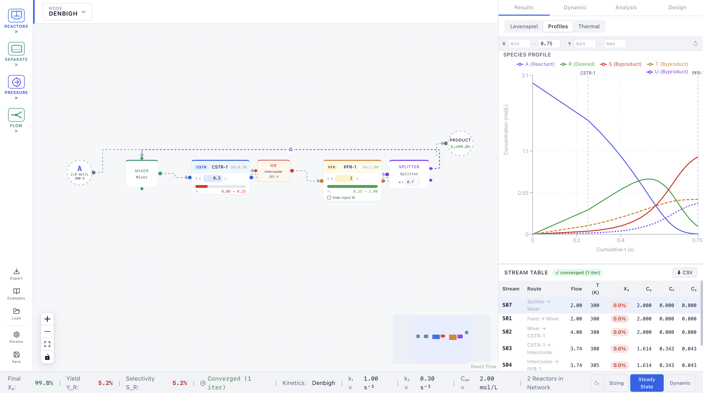

Project Case Study
An interactive reactor network simulator that textbooks can't be

The problem
Chemical reaction engineering courses are full of reactor design equations that describe how conversion, temperature, and volume relate to each other — but every example in the textbook shows a final, static answer. You can't see what happens to the temperature profile when you raise the feed temperature by 10 K, or what the Levenspiel plot looks like when you switch from a single CSTR to a PFR–CSTR series.
The gap between "I can solve the equation" and "I understand how the system behaves" is exactly where engineering intuition lives. I built this simulator to close that gap.
What it does
The simulator covers four views, all updating in real time as you change reactor parameters:
You can build networks — chain a CSTR with a PFR, add recycle, compare configurations side-by-side. The thermal operating diagram shows stable and unstable operating points for a CSTR with exothermic reactions, which is notoriously hard to build intuition for from static diagrams alone.
Key decisions
The alternative was drawing plots on HTML5 Canvas imperatively, which is faster but makes it hard to update individual data points when state changes. Recharts binds directly to React state, so any slider change re-renders only the affected chart segments — the right tradeoff for an interactive tool where responsiveness matters more than raw frame rate.
Reactor networks carry complex interdependent state: each node has inlet composition, temperature, conversion, and outlet conditions that become the next node's inlet. Without types, a function that expected molar flow rate would silently accept a volumetric flow rate. TypeScript caught this class of mistake throughout development and made refactoring the network topology safe.
The Levenspiel plot (1/(-rA) vs. XA) is the textbook's canonical tool for comparing reactor volumes — the area under the curve IS the volume required. Making it the central view rather than a secondary chart forced the simulator to teach the right mental model: reactor design is about picking the curve shape that minimises area.
The initial version only showed steady-state profiles. After using it, the missing piece was obvious: you couldn't tell if a CSTR would recover from a feed disturbance or spiral to a new steady state. Adding a step-change injector that runs a time-stepping simulation turned a steady-state tool into a dynamics demonstration — the feature that makes the thermal operating diagram legible.
Architecture
Result
- Live at reactionsimulator.vercel.app — deployed, publicly accessible
- Covers CSTR, PFR, and series networks with Levenspiel, T-profile, and thermal operating diagram views
- Disturbance injection tab demonstrates dynamic response without a separate simulation environment
- Used alongside Process Thermodynamics coursework at Sogang as a personal study aid